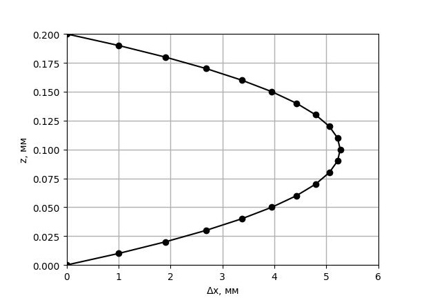
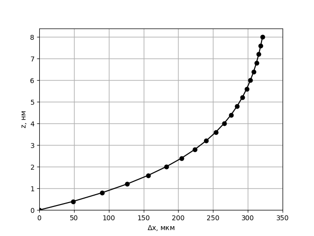
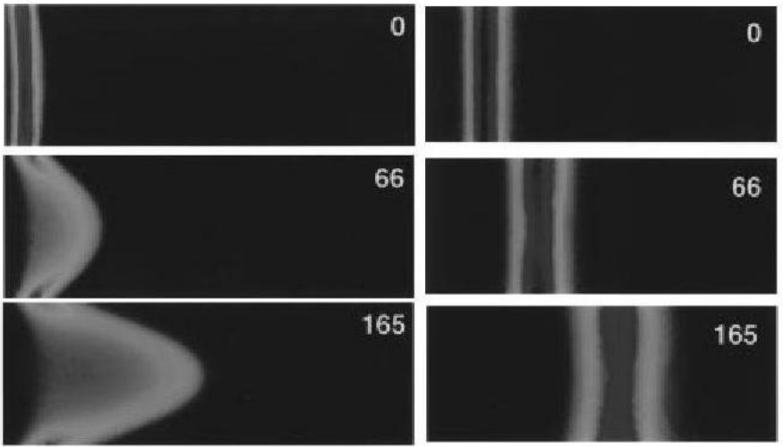

X23 (2023) — English translation
Let us consider a thin layer of liquid enclosed between planes with coordinates $z_1=z$ and $z_2=z+dz$. Viscous friction forces acting in the corresponding planes: $$ f_1 = -\eta \ aL \frac{dv_x}{dz} (z) \\ f_2 = \eta \ aL \frac{dv_x}{dz} (z+dz) $$ Then Newton's second law assume form: $$ \Delta Pa \ dz + f_1+f_2 = 0 \tag{1} $$ Hence equation on velocity: $$ \frac{d^2v_x}{dz^2} = -\frac{\Delta P}{\eta L} \tag{2} $$ Note, that completely not necessarily be take to the limit thickness layer to zero (thus.be. equation (1) correct and for final $dz$). More that, record (for example $z_1 =0$ or $z_1 = b/2$), we obtain integrate analog equation (2). General solution equation (2) have form: $$ v_x = -\frac{\Delta P}{\eta L} \frac{z^2}{2} + C_1 z + C_2 $$ Constant integration be determined boundary condition, in given case – $v(0)=0$ and $v(b)=0$. From here we get the correct answer
Let's plot the dependence $x(z) = \tau v(z)$ on the graph

In steady state, Newton's second law in projection onto the $z$ axis looks like this: $$ -\alpha v_z + q E_z = 0 $$ Express electric field through gradient potential $E_z = - \tfrac{d \varphi}{dz}$, we get the answer
The flow of particles associated with the presence of an electric field is balanced by the flow of ions associated with diffusion. Thus, the balance condition will look like this: $$ n v_z -D \frac{dn}{dz} = 0 $$ Substitute here equation (3), obtain $$ -\frac{q}{\alpha D} \frac{d \varphi}{dz} = \frac{1}{n} \frac{dn}{dz} $$ Integrate both part equation by $z$ and substitute $D=\frac{kT}{\alpha}$, find $$ -\frac{q}{kT} (\varphi - 0) = \ln(\frac{n}{n_0}) $$ As a result,
The result of this paragraph is a special case of the Boltzmann distribution. Of course, this coincidence is not accidental.
$$ \rho = e(n_+ - n_-) = en_0 \left[ \exp \left( -\frac{e \varphi}{kT} \right) - \exp \left( \frac{e \varphi}{kT} \right) \right] = - 2 e n_0 \sinh{\left( \frac{e \varphi}{kT} \right)} \tag{4} $$ Expand expression by parameter $\frac{e \varphi}{kT}$, we find
Gauss's theorem in differential form in the one-dimensional case has the form: $$ \rho = - \varepsilon \varepsilon_0 \frac{d^2 \varphi}{dz^2} $$ Use expansion (5) obtain $$ \frac{d^2 \varphi}{ dz^2} = 2 \frac{e^2 n_0}{\varepsilon \varepsilon_0 kT} \varphi \tag{6} $$ This linear differential equation, it general solution in given case look like following manner: $$ \varphi(z) = C_1 \exp \left( z/\lambda \right) + C_2 \exp \left( - z/\lambda \right), $$ where $\lambda$ be determined from the equation (6), and/but coefficient $C_1$ and $C_2$ – from initial condition $\varphi(0) = \varphi_\delta$ and $\varphi(+\infty) = 0$. Note, that второе boundary condition automatically imply $\lambda \ll b$, thus.be. finding second wall on infinity. For accounting for deviation from this condition, strictly say, $C_1 \neq 0$. However, the answer to point B5 allows us to cast aside any doubts about this. As a result
$\textit{Note.}$ Let us note a more interesting point from the point of view of physics. For expansion (5) and characteristic values of $\varphi_\delta \sim 1\: \mathrm{V}$ to be applicable, temperature $T$ must be $ T \gg \frac{e \varphi_\delta}{k} \sim 10^4\: \text{K}$! However, the approximation used in the problem is not as bad as it might seem at first glance. Let us verify this by solving the equations without using approximation (5). From combination (4) and Gauss's theorem we find: $$ \frac{d^2 \varphi}{dz^2} = 2 \frac{e n_0}{\varepsilon \varepsilon_0} \sinh{\left( \frac{e \varphi}{kT} \right)} $$ Further, integrate equation by $\varphi$: $$ \int \sinh{\left( \frac{e \varphi}{kT} \right)} d \varphi = \frac{kT}{e} \cosh{\left( \frac{e \varphi}{kT} \right)} + C \\ \int \frac{d^2 \varphi}{dz^2} d\varphi = \int \frac{d \varphi'_z}{dz} \varphi'_z \: dz = \int \varphi'_z d \varphi'_z = \frac{ (\varphi'_z)^2}{2} + C, $$ where $\varphi'_z \equiv \frac{d \varphi}{dz} = - E_z $. Substitute boundary condition $\varphi'_z (+\infty) = 0$ obtain: $$ \varphi'_z = -2\sqrt{ \frac{e n_0}{\varepsilon \varepsilon_0} \frac{kT}{e} \left( \cosh{\left( \frac{e \varphi}{kT} \right)} -1 \right)} = -2\sqrt{2\frac{e n_0}{\varepsilon \varepsilon_0} \frac{kT}{e}} \sinh{\left( \frac{e \varphi}{2kT} \right)} $$ Further, separating variable and integrate: $$ -2\sqrt{2\frac{e n_0}{\varepsilon \varepsilon_0} \frac{kT}{e}} z = \int \limits_{\varphi_\delta}^\varphi \frac{d \varphi}{\sinh{\left( \frac{e \varphi}{2kT} \right)}} = \frac{2kT}{e} \ln{\tanh{\frac{e \varphi}{4kT}}} \Bigg|_{\varphi_\delta}^\varphi $$ Hence $$ \varphi = \frac{4kT}{e} \tanh^{-1} \left[ \tanh{ \left( \frac{e \varphi_\delta}{4kT} \right)}{\exp \left(- z/\lambda \right)} \right], $$ where $\lambda$ in accuracy equal its own value in previous consideration. Now проанализируем асимптотику given solution on infinity. For $z \gg \lambda$ exponential turn out small, therefore in leading approximation $\tanh^{-1} (x) \approx x$, and real dependence turn out $$ \varphi \rightarrow \frac{4kT}{e} \tanh{ \left( \frac{e \varphi_\delta}{4kT} \right)}{\exp \left(- z/\lambda \right)} $$ Such manner, our approximation on lower temperature give правильное value \lambda$, however the coefficient before the exponent (prefactor) will be inaccurate.
The potential decreases by a factor of $e$ at $z = \lambda$, the formula for $\lambda$ was found in paragraph $B4$.
This point is similar to the solution to point $A1$. The viscous friction forces acting on the layer will be equivalent, and the electric field will act with a force of $$ F_E = \rho E\: aL \: dz $$ Then similarly equation $(1)$: $$ \eta\frac{d^2v}{dz^2} + \rho E = 0 $$ Taking into account expression $(5)$ and $(7)$: $$ \eta \frac{d^2 v}{dz^2} - \frac{\varepsilon \varepsilon_0 E}{\lambda^2} \varphi_\delta \exp \left( - z/\lambda \right)= 0 $$
From point $C1$ we have the differential equation: $$ \frac{d^2 v}{dz^2} = \frac{\varepsilon \varepsilon_0 E}{ \eta \lambda^2} \varphi_\delta e^ \left( -z/\lambda \right) $$ Find it solution, integrate both part by $dz$ twice: $$ v = \frac{\varepsilon \varepsilon_0 E}{ \eta} \varphi_\delta e^ \left( -z/\lambda \right) + C_1z + C_2 \quad (C_1, C_2 = const) $$ From boundary condition $v(0) = 0$ find: $$ C_2 = -\frac{\varepsilon \varepsilon_0 E}{ \eta} \varphi_\delta $$ With second boundary condition still be the case somewhat complex. Strictly say, $\textit{correct}\:$ boundary condition be $v(b)=0$. However for that, so that consider second wall necessarily introduce change and in distribution potential, add возрастающую exponential. But with point зрения physics this only add such same картинку distribution potential у other wall. For consideration same only one wall arise following проблема: with use accuracy for $z \sim \lambda$ any boundary condition for $z \sim b$ be неотличимы друг from друга, since фактически they still эквивалентны infinity and term form $z/b \ll 1$ пренебрежимо малы. The more not less if we хотим find distribution potential on scale size tube, вклад this term становится существенным. in our same model find $C_2$ one can following manner. Обратимся to formula (8) – it справедлива for any $\varphi (z)$ . thus.to. boundary condition on wall identical, $v(z)$ and $\varphi (z)$ must be симметричны relatively center tube. From this факта and formula (8) follow $C_1 = 0 $.
$\textit {Примечание.}$ In fact, it is possible to obtain a more general expression for the speed $v$, showing that it depends only on $\varphi (z)$, while the form of the dependence of the potential on the coordinate itself is unimportant. Let's write the equation: $$ \eta\frac{d^2v}{dz^2} + \rho E = 0 $$ Taking into account theorem Гаусса it запишется in form: $$ \eta\frac{d^2v}{dz^2} - \varepsilon \varepsilon_0 \frac{d^2 \varphi}{dz^2} E = 0 $$ Similarly two times integrate by $dz$ and obtain: $$ v =\frac{ \varepsilon \varepsilon_0 E \varphi}{\eta} + C_3 z + C_4 \quad (C_3, C_4 = const) $$ $C_3 = 0$ in force симметрии tube. For $\varphi = \varphi_\delta$ $v = 0$, from which $C_4 = -\frac{ \varepsilon \varepsilon_0 E \varphi_\delta}{\eta}$. Итоговый answer: $$ v = \frac{ \varepsilon \varepsilon_0 E}{\eta}(\varphi - \varphi_\delta) \tag{8} $$
Using the formula for the speed obtained at point $C2$, the displacement of the liquid layer ($\Delta x = v \tau$) is easily calculated. Once you have the values for several $z$, you can plot the graph shown below.
Note that the exponential decays significantly already at $z \sim \lambda$. Considering that $\lambda \ll b$, with $z \sim b$ $v \approx -\frac{\varepsilon \varepsilon_0 E}{\eta} \varphi_\delta = const.$, and in the figure the front will be depicted as a straight line parallel to the $z$ axis.
Photos of the real experiment. On the left is the reagent distribution profile in the case of uniformly distributed pressure, on the right is the case considered in part C.

